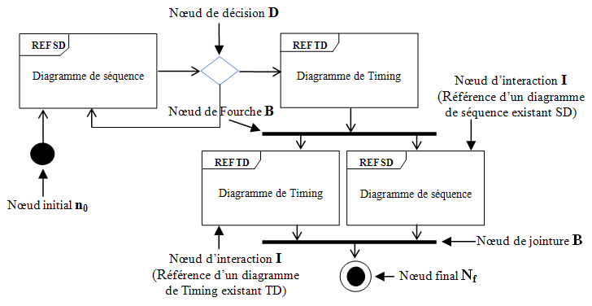

Diagramme global d'interactions
Ils définissent des interactions par une variante des diagrammes d'activité, d'une manière qui permet une vue d'ensemble de flux de contrôle.
Ils se concentrent sur la vue d'ensemble de flux de contrôle où les nœuds sont des interactions ou InteractionUses.
Les lignes de vie et les messages n'apparaissent pas à ce niveau de vue d'ensemble.
Exemple
